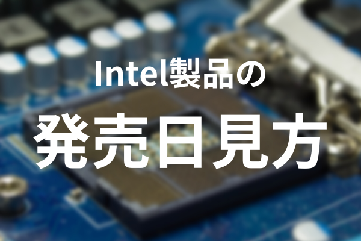
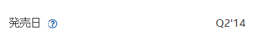

Intel製品の発売日の見方
2022/03/20
Intel公式スペックシートにある、発売日って初見では絶対読み取れませんよね。

ということで本記事では、上のような意味不明なIntel製品発売日の見方を紹介します。
短い記事にはなりますが、みなさんのお役に立てれば幸いです。
発売日の表記方法
発売日は以下のような方法で表記されています。
‘(シングルクオーテーション)の前部分が四半期を表し、
後部分が西暦下二桁(20xx年)を表します。
四半期はQ1(第一半期)、Q2(第二半期)、Q3(第三半期)、Q4(第四半期)に分かれます。
発売”日”とありますが、ほぼほぼ発売”時期”ですね。
ということで先ほどの画像の発売日を読み取ってみましょう。
Q2は「第二半期」、14は2014年を表すので、
このCPUは2014年の第二半期に発売されたことがわかります。
まとめ
今回はIntel製品の発売日の見方を紹介しました。
「四半期’西暦」と覚えるだけで一瞬で読み取れるようになると思います。
それでは次のブログでお会いしましょう。さようなら。